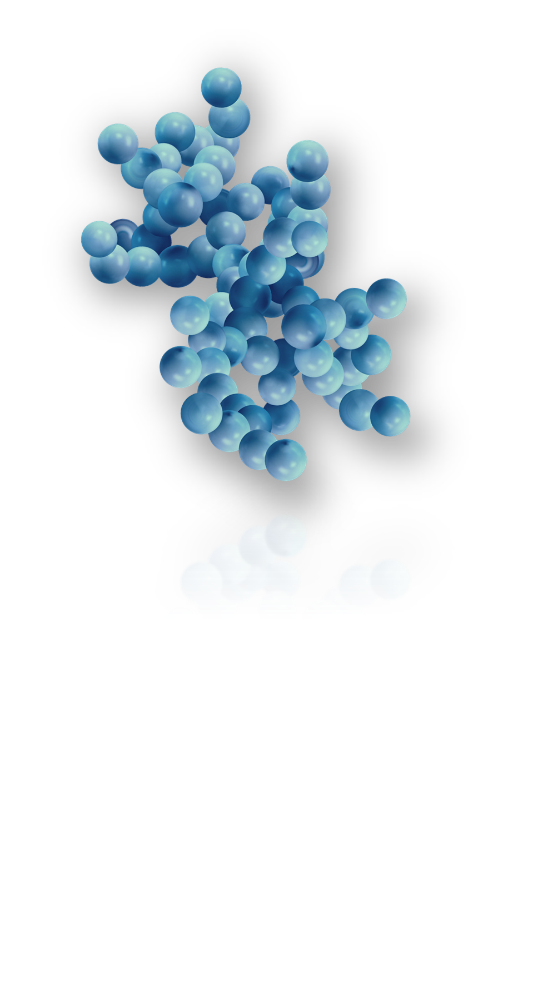

MATERIALS BY DESIGN
Engineering
Nanoporous
Interfaces.
from Synthesis
to AI-Driven Discovery
01 / 04STRUCTURE & INTERFACE
Design the space within.
Shape the pore architecture and its interfaces — where the material meets molecules, ions, and reactions.

01PORE ARCHITECTURE
Geometry · Connectivity · Surface
Loading the interactive model.